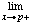

Definition
 f (p).
f (p).
f (x) exists and is equal to f (p).
f (p). [Take (xn) to be any unbounded monotonic decreasing sequence.]
 f (p). [Take (xn) to be any sequence converging to p with xn> p.]
 f (p). [Take (xn) to be any sequence converging to p with xn< p.]
f (p). [Take (xn) to be any sequence converging to p with xn< p.]
 ε > 0)(∀x ∈ R)(∃δ > 0)(|x - p| < δ ⇒ |f (x) - f (p) < ε)
ε > 0)(∀x ∈ R)(∃δ > 0)(|x - p| < δ ⇒ |f (x) - f (p) < ε)